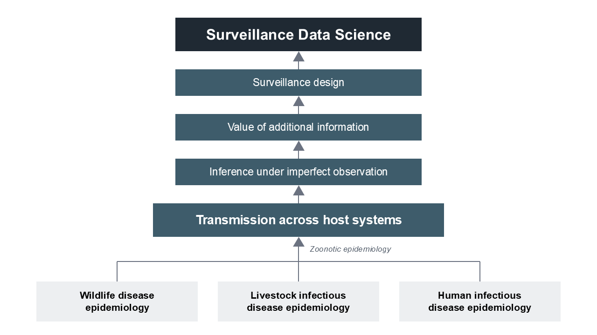

Research
Quantitative infectious disease epidemiology across wildlife, livestock, and human systems, with a focus on transmission and surveillance at their interfaces.

Research programme
My work spans different host systems, but the underlying research problem is shared: how transmission processes generate latent risk, how surveillance makes only part of that risk visible, and how additional observations can improve inference and decisions.
Transmission across host systems
Understand how infections spread within and across wildlife, livestock, and human populations, and how transmission changes across ecological and epidemiological contexts.
Inference under imperfect observation
Separate latent infection processes from observation processes shaped by detection, surveillance effort, accessibility, sampling, testing, and reporting.
Value of additional information
Ask when another host, data source, or surveillance stream adds genuinely new information, distinguishing information gain, predictive improvement, and decision value.
Surveillance design
Use those results to decide what, where, and when to observe next, and how limited surveillance resources should be allocated.
Surveillance Data Science → From imperfect observations to better surveillance decisions.